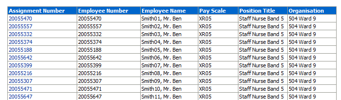
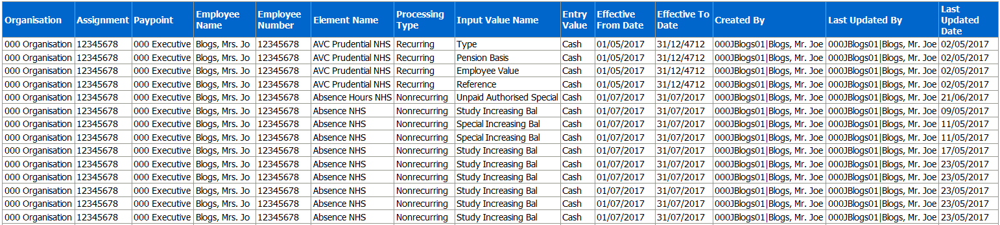
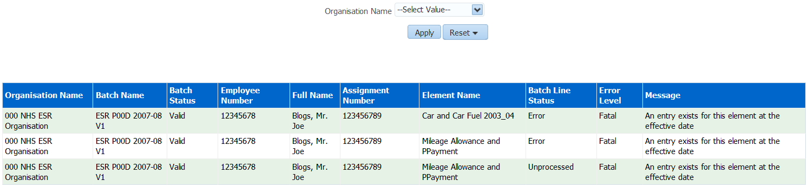
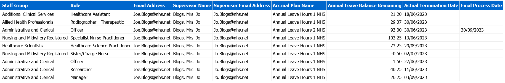

Element Entries Dashboard
Description
This dashboard is designed to provide the user with intelligence around Element Entries.
Definitions
Element: These are components in the calculation of employee pay. Each element represents a compensation or benefit type, such as salary; wages, and pension contributions.
Element Entry: This is the record controlling an employee's receipt of an element, including the period of time for which the employee receives the element and its value.
Element Classifications: These control the order in which elements are processed and the balances they feed. Oracle Payroll predefines primary element classifications and some secondary classifications. Users can create other secondary classifications.
Allocation
This dashboard is available to the following URPs:
XXX BI Administration
XXX Finance Reporting
XXX Finance Reporting and Hub Mapping
XXX HR Administration
XXX HR Administration (With RA)
XXX HR Management
XXX Payroll Administration
XXX Payroll Audit
XXX Payroll Super Administration
Entries by Assignment Tab
Prompts
Organisation(s)
Staff Group(s)
Person Type(s) (Multi-select, default: Employee, Employee and Applicant)
Employee Person Type(s)
Employee Category
Assignment Status
Occupation Code
Assignment Category(s)
Pay Scale
Pay Point
Effective Date
Element Name
Element Entry Value
Restrict to Employees with an Actual Termination Date (Yes: Optional)
Element Entries by Assignment
Description
This analysis is designed to show all assignments against which the selected (user defined) Elements are present.
Data Items
| Employee Number | Position Title |
|---|---|
| Assignment Number | Organisation |
| Employee Name | Element |
| Pay Grade | Effective From |
| Employee Category | Effective To |
| Position | Created By |
| Processing Type | Last Updated By |
| Element Entry Value Name | Last Updated Date |
| Element Entry Value | Actual Termination Date |
Column Selectors
None
View Selector
None
Example Screenshot

Entry Combinations Tab
Entry Combinations
Description
This analysis is designed to show all assignments against which the combination of selected (user defined) Elements are present.
Data Items
| Employee Number | Pay Grade |
|---|---|
| Assignment Number | Position Title |
| Employee Name | Organisation |
Column Selectors
None
View Selector
None
Example Screenshot

Payments Due to Expire Tab
Payment Due to Expire
Description
This analysis is designed to show expiry of payments to Medical and Dental staff over the next 3 months, however other staff and dates can be included using the prompts.
Data Items
| Employee Number | Effective Date From |
|---|---|
| Assignment Number | Effective Date To |
| Employee Name | Days to Expiry |
| Element Name | Units Worked |
| Organisation Level (1-13) |
Column Selectors
Group By (Org Level 1-13)
View Selector
None
Example Screenshot

Element Entry Updates Tab
Description
The report is designed to return entries that have been updated within a specific period of time by a specific person. Please note: This report does not yet return updates entries of ex-employees. This will be added in a future release.
Prompts:
* Payroll Name
* Payroll Period
Element Name
Processing Type
Last Updated By
Element Set Name
Last Updated Date Between
Data Items
| Organisation | Input Value Name |
|---|---|
| Assignment | Entry Value |
| Paypoint | Effective From Date |
| Employee Name | Effective To Date |
| Employee Number | Created By |
| Element Name | Last Updated By |
| Processing Type | Last Updated Date |
Example Screenshot

Batch Element Entry Messages Tab
Description
This analysis enables users to highlight problems with the elements prior to a payroll being run to avoid an entire payroll being run as a validation process. It also allows users to view the validation messages returned after Batch Element Entry has been used.
Prompts:
Organisation Name
Data Items
| Organisation Name | Assignment Number |
|---|---|
| Batch Name | Element Name |
| Batch Status | Batch Line Status |
| Employee Number | Error Level |
| Full Name | Message |
Example Screenshot

In Lieu of Annual Leave Tab
Description
This analysis return assignments with an Actual Termination Date in the future and an annual leave balance not equal to zero, where there are no elements relating to annual leave payment/deduction against the assignment.
Please note that this analysis only return current employees.
Prompts:
Organization Name
Staff Group(s)
Assignment Category
Person Type(s)
Employee Person Type(s)
Assignment Status
Employee Category
Paypoint
Effective Date
Actual Termination Date
* Element(s)
Effective From Date >=
Data Items
| Organisation | Supervisor Name |
|---|---|
| Employee Name | Supervisor Email Address |
| Employee Number | Accrual Plan Name |
| Assignment Number | Annual Leave Balance Remaining |
| Staff Group | Actual Termination Date |
| Role | Final Process Date |
| Email Address |
Example Screenshot
